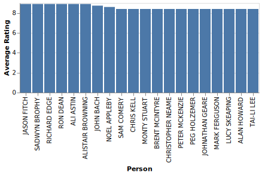

Summary the measure Movies Counts
Goal Charts
Chart 5
8 insights
Double-click to zoom
Chart 0
6 insights
Double-click to zoom
Chart 1
3 insights
Double-click to zoom
Goal Insights
Exceptional High Values: SAMUEL L. JACKSON
SAMUEL L. JACKSON demonstrates exceptionally high Movies Counts values in Person, Person, representing a significant positive outlier that stands apart from typical patterns.
SAMUEL L. JACKSON
Undestanding the relationship between Number Of Votes and Rating
Goal Charts
Chart 6
7 insights
Double-click to zoom

Chart 4
6 insights
Double-click to zoom
Chart 3
8 insights
Double-click to zoom
Chart 2
8 insights
Double-click to zoom
Chart 10
New View
4 insights
Double-click to zoom
Chart 11
New View
3 insights
Double-click to zoom
Goal Insights
Relationship between Average Votes and Average Rating
Average Votes and Average Rating show a moderate positive correlation (r=0.50), indicating they tend to move together. This suggests complementary dynamics between these measures.
Albert Donoghuenm1405310ManuelROSS NOBLEnm3479690